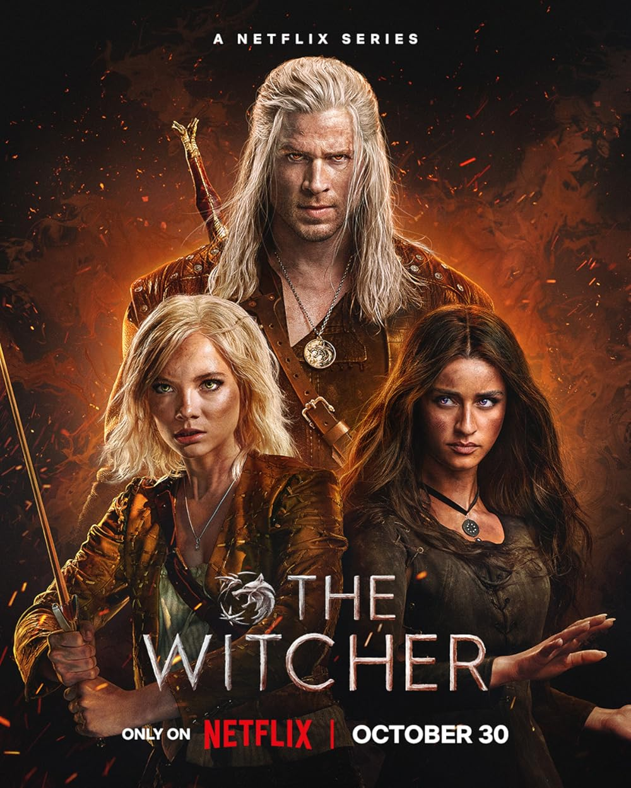

The Witcher on Screen
Netflix live-action series and animated film cast, seasons, and lore notes.

The Witcher
A live action adaptation following Geralt of Rivia, a monster hunter whose destiny becomes intertwined with a powerful sorceress and a child of prophecy. Begins with the short story collections and grows into the main saga.
Seasons
Season 1
Three interweaving timelines following Geralt, Yennefer, and Ciri adapting the short story collections.
Season 2
Geralt takes Ciri to Kaer Morhen while Yennefer navigates the aftermath of the Battle of Sodden Hill.
Season 3
Loosely based on Time of Contempt. Geralt and Ciri are hunted across the Continent while political alliances fracture.
Season 4
The story continues toward saga material drawn from Baptism of Fire, with Ciri’s path and new allies such as Regis taking center stage.
Main cast
Geralt of Rivia
Henry Cavill (S1–S3), Liam Hemsworth (S4+)
Yennefer
Anya Chalotra
Ciri
Freya Allan
Jaskier
Joey Batey
Tissaia
MyAnna Buring
Cahir
Eamon Farren
How it differs from the books
The show merges timelines that are separate in the books and compresses events significantly. Several characters are given larger roles or combined into one. The magic system leans more on chaos as raw emotion. Broadly follows the short stories in S1 and diverges more heavily from S2 onward.

The Witcher: Nightmare of the Wolf
A prequel following a young Vesemir — before he became the oldest witcher at Kaer Morhen. The film explores how he came to take the Trial of the Grasses and the founding of the Wolf School.
Main characters
Vesemir
Young witcher, protagonist
Tetra Gilcrest
Elven mage, antagonist
Illyana
Vesemir's love interest
Where it fits in the timeline
Set roughly a century before the main series. Shows the founding era of the Wolf School and the political climate that made witchers both necessary and despised. Connects directly to the backstory Vesemir tells in Season 2 of the Netflix series.

The Witcher: Sirens of the Deep
An animated adaptation of the short story A Little Sacrifice from the collection Sword of Destiny. Geralt investigates a series of murders on the coast and becomes entangled in the conflict between humans and the underwater realm of the merpeople.
Main characters
Geralt of Rivia
Protagonist, witcher
Duny / Urcheon
Cursed knight
Pavetta
Princess of Cintra
Jaskier
Bard, Geralt's companion
Agloval
Nobleman, client
Sh'eenaz
Mermaid, Agloval's love
Where it fits in the timeline
Based on A Little Sacrifice from Sword of Destiny — set during Geralt's earlier years as a witcher for hire, before Ciri enters his life. The second animated film produced by Studio Mir for Netflix, continuing the anthology approach started by Nightmare of the Wolf.